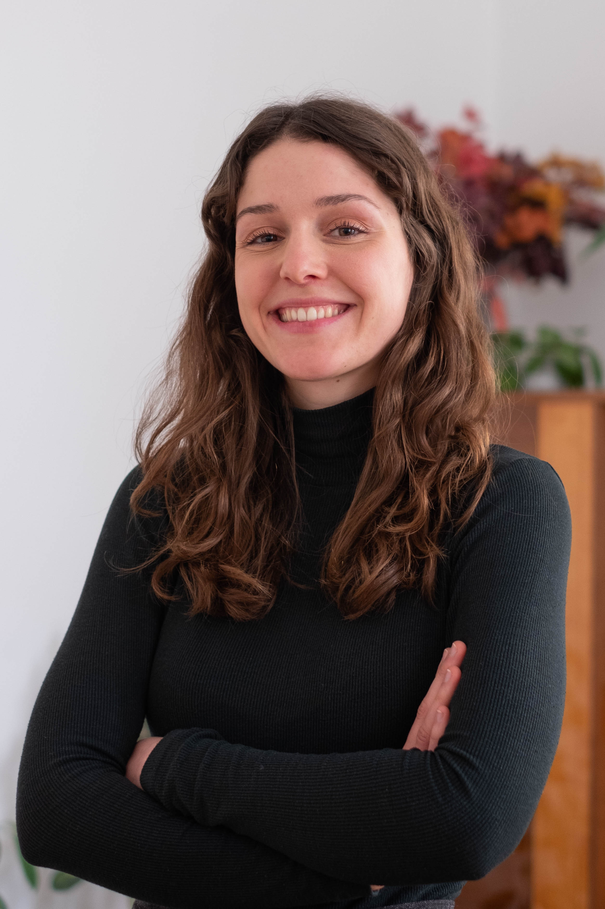

Carolin Gubier
Dynamic, dedicated, and passionate about purpose-driven marketing. Creative mind in content strategy, copywriting, and graphic design.

Education
- University of Applied Sciences, Graz - MA, Content Strategy (2024 - Present)
- University of Applied Sciences, St. Pölten - BA, Marketing & Communications (2020 - 2023)
- University of Applied Sciences, Brussels - International Business Management (2021)
- Werbeakademie WIFI Wien - Graphic Design Course (2019 - 2020)
Experience
- Social Media & Strategy, Federal Ministry of Social Affairs, Health, Care and Consumer Protection (May 2024 - Present)
Social Media Management, Social Media Strategy, Campaign Management
- Social Media Manager, Media Award Austria (Mar 2022 - Sep 2022)
Content Production for Instagram & LinkedIn, Social Media Strategy
- Intern, Visionistas - Agency for Social Responsibility (Feb 2023 - Jun 2023)
PR & Communication Work, Text & Graphic Design, Social Media and Content Marketing
- Intern, Heimat Vienna (Sep 2022 and Oct 2023)
Text & Concept
- Intern, Diego 5 - Kobza Media Group (Mar 2020)
Social Media & Graphic Design
Skills
Hard Skills:
- Monitoring & Reporting
- Analytics
- Video Editing
Soft Skills:
- Fluent in German and English (C2)
- Basic Knowledge of French and Italian (A2)
- Teamwork & Communication Skills
- Responsible & Self-motivated
- Creative & Solution-oriented
Hobbies
Mountaineering, Traveling, Sailing, Cinema